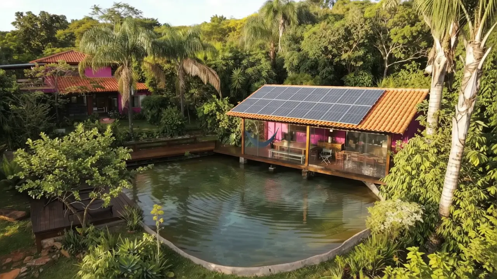
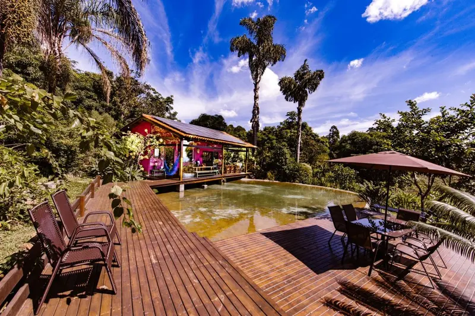
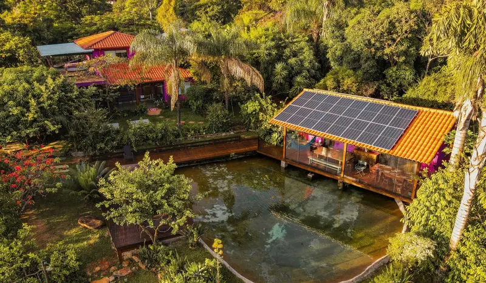
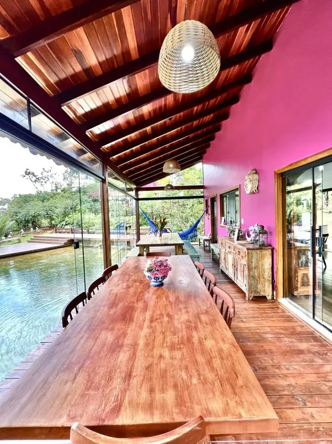
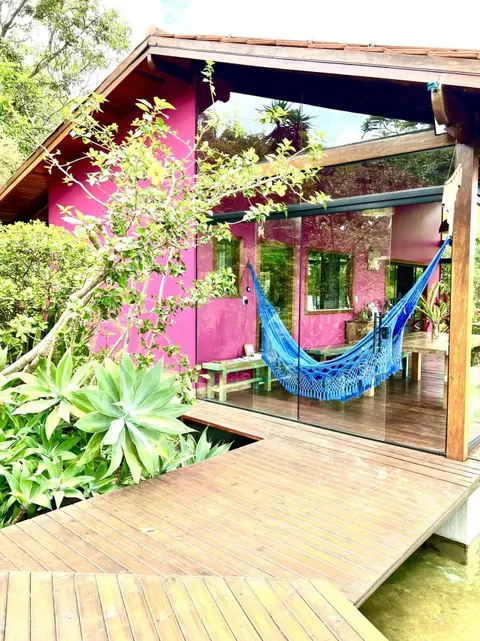
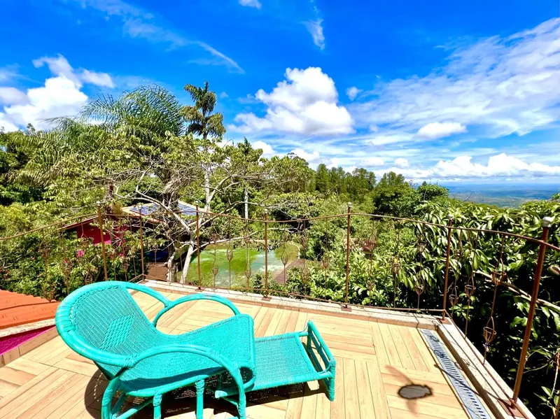
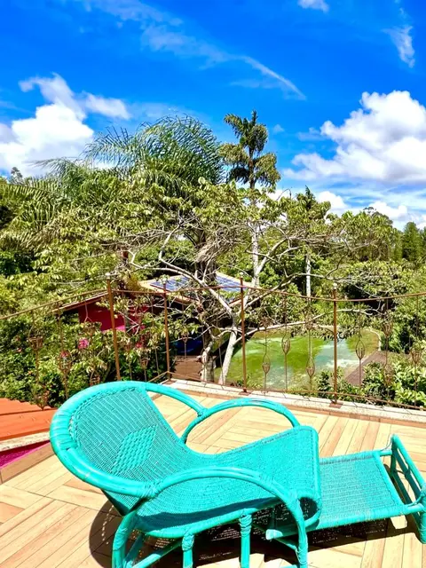
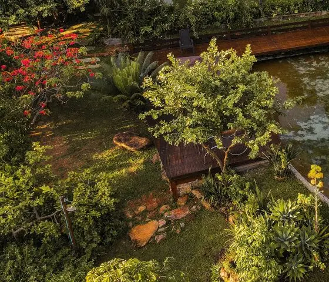
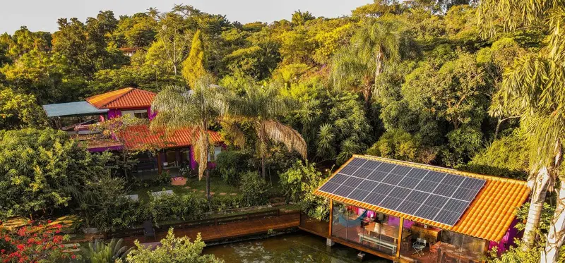

Animação criada a partir de fotografias da propriedade
Terra Dourada · Lago Oeste, Brasília
Deixe a pressa.
Entre na água.
Casa Rosa e Chalé Kaliandra: duas formas de viver o Cerrado.

Como funcionam as piscinas
A água dá o ritmo.
As piscinas da Terra Dourada são abastecidas por água natural corrente. Sem tratamento químico, a água não tem o azul de uma piscina convencional: reflete a vegetação, o céu e a luz do dia.
- Origem
- Água natural corrente
- Tratamento
- Sem adição de produtos químicos
- Temperatura
- Sem aquecimento; acompanha o clima
Revisão. Validar com os anfitriões o funcionamento atual das duas piscinas e qual pertence a cada unidade. A atribuição desta foto à Casa Rosa foi inferida pela pesquisa.
As acomodações
Como você quer estar aqui?
- Reunir Casa Rosa Uma casa para famílias e grupos estarem juntos. 12 hóspedes · 4 quartos · 4 banheiros Ver a Casa Rosa
- Desacelerar Chalé Kaliandra Uma pausa a dois ou com poucas pessoas. 2 quartos · 2 banheiros Ver o Kaliandra
- Ficar nas duas Locação conjunta As duas acomodações para o mesmo grupo, cada uma com seus espaços. Capacidade e condições na consulta Entender a locação conjunta
Revisão. Capacidade do Kaliandra (7 no anúncio individual, 6 no conjunto) e da locação conjunta não confirmadas: ficam fora da interface. Não somar capacidades.

Casa Rosa — acomodação no Lago Oeste
Casa Rosa.
Tempo para estar junto.
Uma estadia para reunir os seus.
Junto à piscina, uma área envidraçada com mesa longa recebe as refeições e as conversas do grupo, com o deck e a água a poucos passos.
- Hóspedes
- 12
- Quartos
- 4
- Banheiros
- 4
Revisão. Reconfirmar a distribuição das camas e esclarecer, na página da unidade, o quarto acessado por outra suíte e o banheiro compartilhado. Não apresentar como quatro suítes independentes.


Chalé Kaliandra — acomodação no Lago Oeste
Kaliandra.
Espaço para desacelerar.
Uma pausa a dois — ou com quem cabe no seu descanso.
Do terraço, o olhar atravessa a mata até o horizonte. O tempo passa a ser medido pela luz.
- Quartos
- 2
- Banheiros
- 2
Revisão. Capacidade (6 ou 7) e metragem (80 ou 100 m²) divergem entre anúncios: fora da interface até confirmar. Atribuição do terraço ao Kaliandra inferida pela pesquisa. Galeria "Ver ambientes e detalhes" aguarda fotos.


Duas acomodações distintas da Terra Dourada, cada uma com seus próprios ambientes.
Locação conjunta
Duas casas.
Uma estadia compartilhada.
Consulte a possibilidade de reservar Casa Rosa e Kaliandra para o mesmo grupo.
Cada acomodação mantém seus próprios espaços, e o grupo combina como quer conviver. Capacidade, exclusividade e condições da locação conjunta são informadas na consulta.
Revisão. Nome comercial proposto: "Terra Dourada por inteiro" — usar só depois de validar o alcance real da exclusividade. Não somar 12 + 6 ou 12 + 7. Não promover festas, casamentos ou retiros sem autorização.
O lugar
Cuidar faz parte de receber.
Mata, árvores frutíferas, pássaros e vistas abertas fazem parte da rotina da Terra Dourada.
Casas entre as árvores, água corrente e caminhos de madeira: a estadia acontece dentro da paisagem do Lago Oeste.
Conheça o lugar no Instagram
-
Prática 1 · reaproveitamento da água para irrigação. Citada em publicação oficial. Confirmar como funciona, documentar com foto e aprovar o texto.
-
Prática 2 · a definir com os proprietários. Somente prática real, com evidência. Painéis visíveis nas fotos não autorizam falar em autossuficiência.
-
Prática 3 · a definir com os proprietários. Sem certificações, porcentagens ou selos sem prova.
Avaliações
Quem fica conta.
-
4,95 de 5
Casa Rosa · Airbnb
95 avaliações
Ler avaliações no Airbnb -
4,93 de 5
Chalé Kaliandra · Airbnb
74 avaliações
Ler avaliações no Airbnb -
4,8 de 5
Terra Dourada · Google
22 avaliações
Ver avaliações no Google
Notas consultadas em 6 de outubro de 2026, sujeitas a atualização nas plataformas. Cada nota se refere à acomodação e à plataforma indicadas.
Revisão. Revalidar notas e quantidades antes de publicar. Link público da ficha Google a validar. Depoimentos: nenhum autorizado — no máximo dois, com texto original e atribuição conferida. Nunca criar rostos ou citações.
Localização e acesso
Lago Oeste.
Um outro lado de Brasília.
A Terra Dourada fica no Lago Oeste, na área rural de Brasília, no Distrito Federal.
- Localização
- Lago Oeste, área rural de Brasília — DF
- Antes de ir
- Combine o trajeto e tire dúvidas sobre o acesso com a equipe.
Revisão. Confirmar pin, grafia do endereço (Núcleo Rural Lago Oeste, Sobradinho II?) e instruções seguras de chegada. O botão "Ver rota" aparece sozinho quando o link for preenchido em js/config.js. Não informar tempo de viagem.
Informações para sua estadia
Para planejar com tranquilidade.
Ficou alguma dúvida? Fale com a Terra Dourada.
As estadias
Qual acomodação escolher?
A Casa Rosa recebe até 12 hóspedes em 4 quartos e favorece a convivência de famílias e grupos. O Chalé Kaliandra, com 2 quartos, é pensado para desacelerar a dois ou com poucas pessoas. Para o mesmo grupo, também é possível consultar as duas acomodações.
Qual é a capacidade?
Casa Rosa: até 12 hóspedes. Para o Chalé Kaliandra e para a locação conjunta, a capacidade é informada na consulta.
Como funciona a locação conjunta?
Você pode consultar a reserva da Casa Rosa e do Chalé Kaliandra para o mesmo grupo. Capacidade, condições e disponibilidade são informadas diretamente pela equipe.
As piscinas
As piscinas são aquecidas?
Não. As piscinas são abastecidas por água natural corrente, sem adição de produtos químicos e sem aquecimento. A temperatura da água acompanha o clima.
Como é a água?
Natural e corrente. Por não receber tratamento químico, ela não tem o azul de uma piscina tratada: reflete a vegetação, o céu e a luz do dia.
Chegada e regras respostas pendentes
- Há alimentação incluída?
- Pode levar pets?
- Como é o acesso? Qual a condição da estrada?
- Qual o horário de chegada e saída?
- Quais as condições de pagamento e cancelamento na reserva direta?
- Cada acomodação tem piscina e área privativas?
Respostas ficam no documento interno até serem confirmadas; nunca como texto fictício no site.

Consultar disponibilidade
Vamos planejar seus dias aqui?
Conte suas datas e com quem você vem.
Todos os campos são opcionais. A conversa abre no WhatsApp com a mensagem pronta para você revisar — nada é enviado automaticamente.